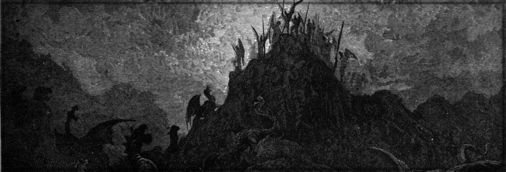

Return to homepage:
Gothica
Catalogue of Texts by Author
Curated by Libernio Church-pledged
Aperius Ponti
The Leaving of Loup
Curate Clivus of Calgoan
Catalogue of Commonly Worshipped Spirits Among the Cahochic Peoples
The Rise and Fall of Menhana
Teacher Laghem Alkaran
Tenets of Pentamicism for the Common Folk
Lindie Waeke
Rise of the Iron Empress
Nishna ni Nananiri
The Cycle of Soul
Penrace Ankhum
Argument Against the Supernatural
Sewyn the Younger
Phylogeny of Unnatural Creatures